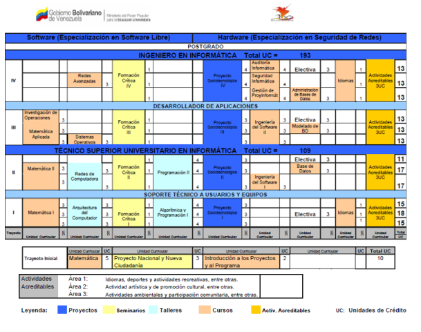

Universidad Politecnica Territorial del Estado Lara "Andres Eloy Blanco"
El diseño curricular del PNFI emerge como un proceso social formativo, participativo y consensuado donde intervienen dimensiones dinámicas en constante revisión, lo que conforma una estructura de formación integral que permite desarrollar los saberes necesarios, a fin de enfrentar la creciente complejidad de la sociedad actual, la cual debe su dinámica en gran medida a los avances tecnológicos informáticos.
El PNFI es un programa de formación en Informática el cual se diseña a partir del conjunto de saberes, prácticas y convivencias a lograr en un profesional que maneje el tratamiento automatizado de la información y su tecnología; elementos como la responsabilidad, la ética, solidaridad, justicia, respeto al ambiente y a la vida y la calidad como partes de un todo que subyace y se hace presente en el producto o respuesta a generar.
Esquema de Trabajo de la Comisión Técnica Interinstitucional del Programa Nacional de Formación en Informática (CTPNFI)